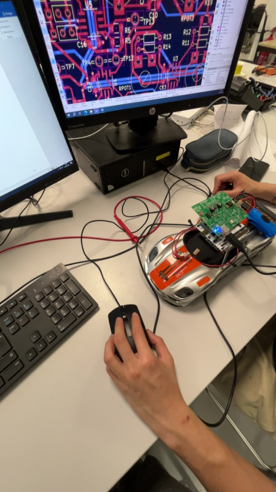

Volet Électronique & PCB
Ma Conception Matérielle & Routage KiCad
En binôme avec Makoa (documenté dans notre Cahier de Laboratoire), j'ai pris en main la réalisation complète du hardware :
- Schéma & Dimensionnement : Saisie sous KiCad / Proteus, calcul des composants discrets et protections des entrées/sorties.
- Mon premier typon double-face : J'ai routé l'intégralité du PCB avec un grand plan de masse pour limiter les parasites, et des pistes d'alimentation larges spécialement dimensionnées pour les appels de courant des moteurs DC.
- Intégration mécatronique : Implantation du pont en H, des capteurs phototransistors (suivi de ligne), de la LDR pour les phares automatiques et du récepteur Bluetooth.
- Brasage & Tests physiques : J'ai brasé moi-même les composants CMS et traversants en atelier, puis traqué les courts-circuits au multimètre et à l'oscilloscope avant la mise sous tension.
« Réaliser mon premier vrai circuit imprimé double-face et le voir fonctionner sans surchauffe a été un déclic majeur pour ma passion de l'électronique. »
Volet Firmware & C++
Mon Firmware STM32 (PlatformIO / C++)
J'ai développé le code embarqué en C++ sur la carte STM32 Nucleo L476RG (fichier projet_etudiant_smartcar.cpp) :
- Génération PWM par Hardware Timers : J'ai configuré les timers internes pour moduler finement la vitesse des moteurs (canaux PWM avant/arrière et différentiel gauche/droite).
- Échantillonnage continu : Lecture des canaux ADC pour surveiller la décharge de la batterie et traiter les signaux des capteurs optiques.
- Pilotage Bluetooth & GUI Mobile : J'ai configuré la liaison série Bluetooth et l'application smartphone RemoteXY. Quel plaisir de pouvoir diriger la voiture au doigt sur l'écran tactile et de voir la télémétrie batterie s'afficher en temps réel !
Conception Matérielle, Routage PCB & Qualification sur Banc • Projet SmartCar
Du schéma KiCad au prototype assemblé et qualifié sur banc d'essai 1. Prototype matériel de la SmartCar :
Carte électronique double face équipée, intégrant les connecteurs de puissance moteurs, les étages d'alimentation, le microcontrôleur STM32 et les modules capteurs/actionneurs.
1. Prototype matériel de la SmartCar :
Carte électronique double face équipée, intégrant les connecteurs de puissance moteurs, les étages d'alimentation, le microcontrôleur STM32 et les modules capteurs/actionneurs.
 2. Routage PCB sous KiCad :
Conception du typon double couche avec plan de masse, routage des pistes de puissance larges pour les moteurs et isolation des signaux numériques haute vitesse.
2. Routage PCB sous KiCad :
Conception du typon double couche avec plan de masse, routage des pistes de puissance larges pour les moteurs et isolation des signaux numériques haute vitesse.

3. Banc de test & Intégration en laboratoire : Mise sous tension du véhicule assemblé sur châssis mobile, liaison avec la station de développement et vérification des continuités et signaux sous environnement réel.